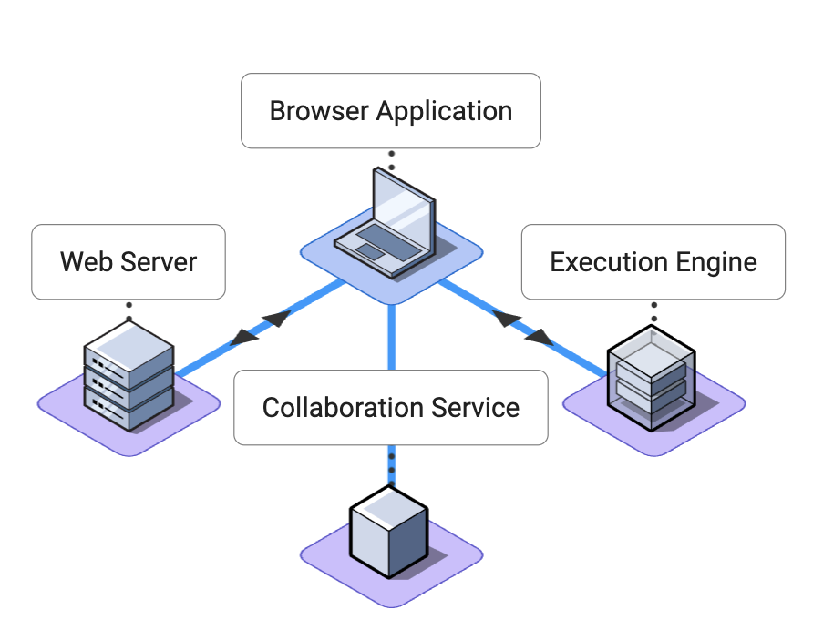
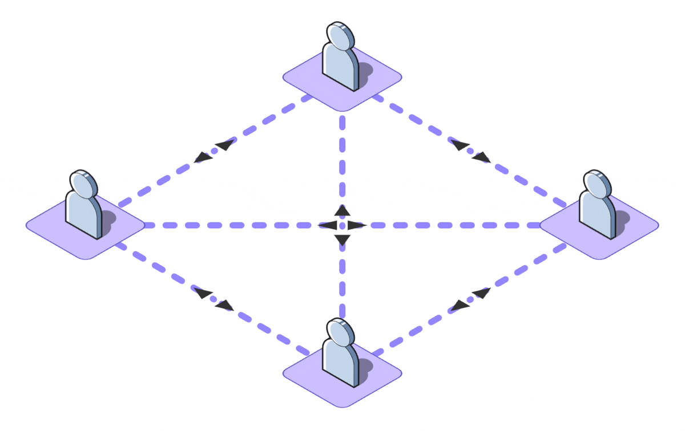
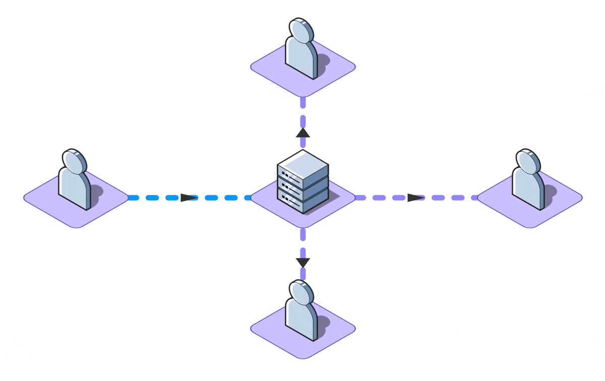
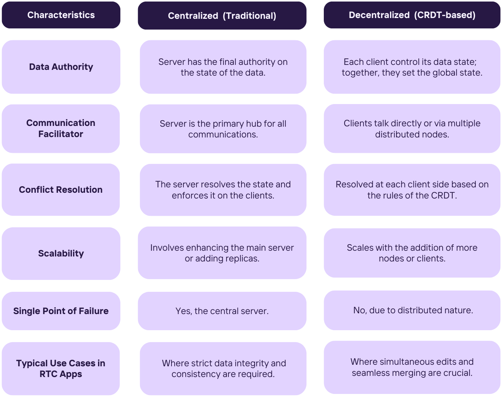
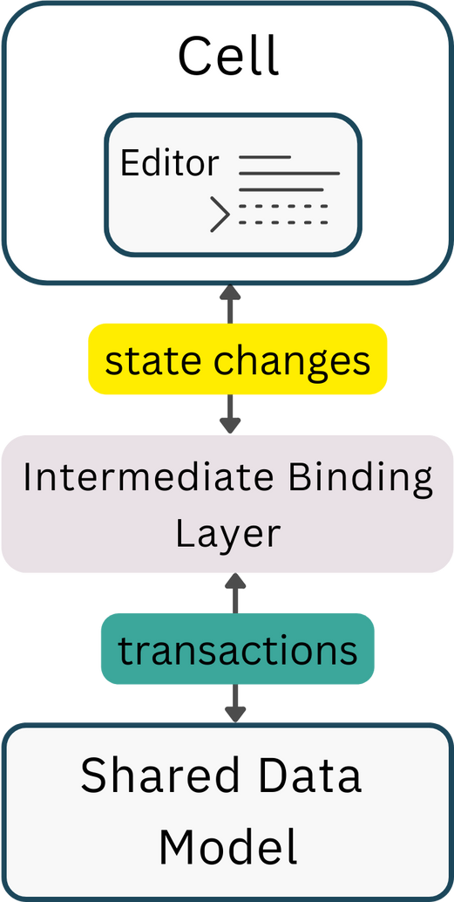
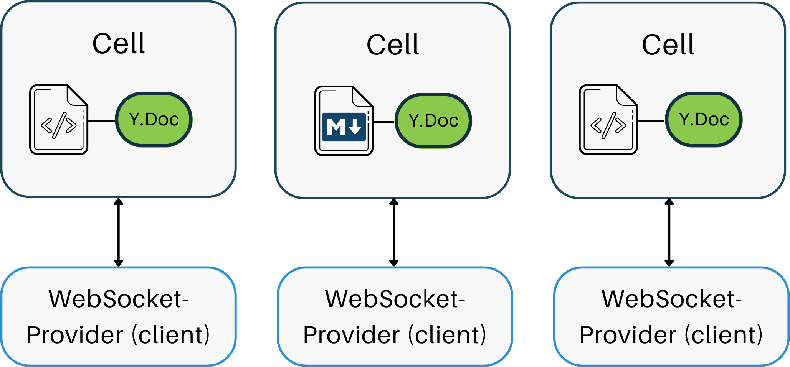
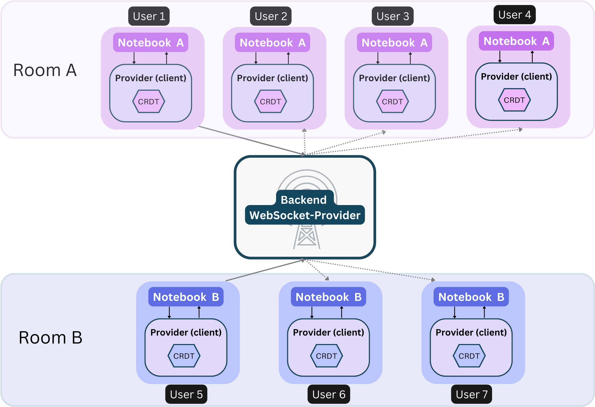
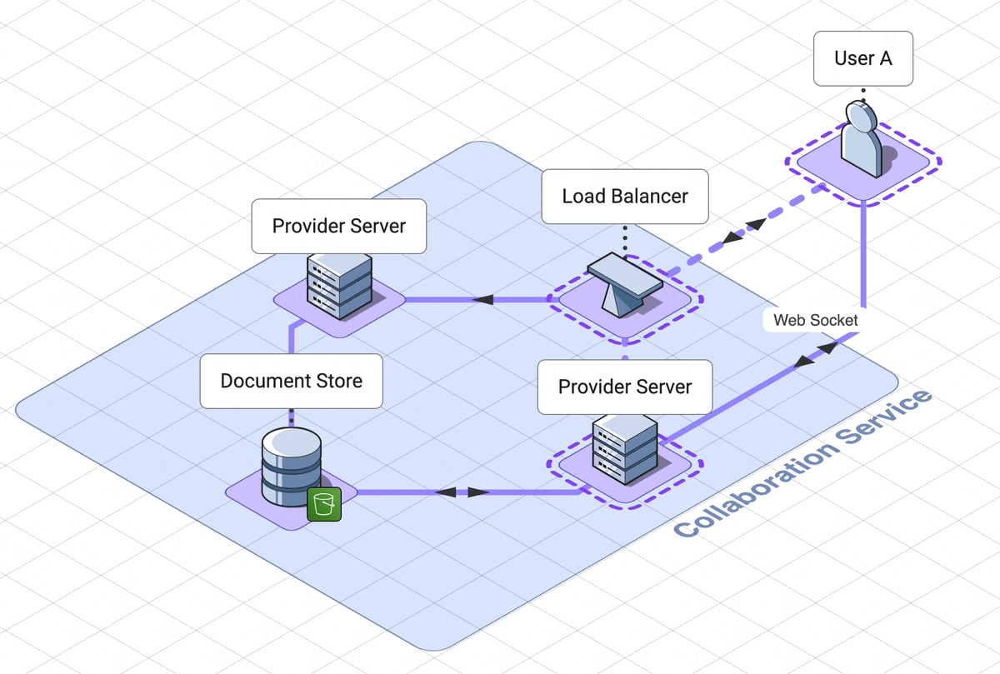

A collaborative computational notebook that brings
note-taking, code execution and real-time collaboration
to a single platform.
Get started quickly
Cloud-based
As a cloud-based tool, Pennant requires no installation, allowing users to get
started quickly.
Notebook Style Execution
Empowers users to experiment with
their code
Pennant segments code into cells, enabling users
to run sections of code step-by-step, and displaying results directly below the executed cell.
Case Study
1.Pennant Overview
Pennant is a collaborative computational notebook for web development students and
professionals that brings note-taking, code execution, and real-time collaboration to a
single
platform.
As a cloud-based tool, Pennant requires no installation, allowing users to get
started
quickly and providing secure server-side code execution. And importantly, Pennant supports seamless real-time
collaboration as students and professionals become increasingly remote.
This white paper will generally explore the technical challenges of computational notebooks, such
as code
execution and real-time user collaboration, our team’s specific architectural decisions to overcome those
challenges, and the resulting tradeoffs from those decisions. We’ll explore each of these
technical
choices in depth and our final architecture, but first we’ll provide a brief background on the product domain.
1.1 Computational Notebooks
Computational notebooks allow users to write, document, and execute code in a single tool. Unlike scripts,
Pennant segments code into cells that enable users to run sections of code
step-by-step,
displaying immediate, inline results directly below the executed cell. This empowers users to experiment with
their
code, and users can receive immediate feedback on how changing their code influences the
output.
Computational notebooks facilitate the creation of detailed notes through cells with markdown functionality.
Markdown
cells render text, images, and other elements to deliver rich and visually engaging documentation notes.
Consequently,
data scientists and researchers utilize computational notebooks as a primary tool for exploring datasets and
sharing
findings.
Computational notebooks are also viable for learning. Students from diverse academic fields can learn how to
code
with Jupyter Notebook with no prior experience. Instructors can create interactive lecture notes while
students can
experiment with code snippets on the same notebook CITATION. Computational notebooks also
circumvent
technical setup requirements that can be difficult for beginners, such as setting up development environments
CITATION.
1.2 How Pennant is Used
Pennant brings the educational benefits of using computational notebooks to web development students. Unlike
note-taking tools like Notion and Obsidian, a computational notebook allows users to read tutorials, take
notes,
and experiment with code in one place.
Pennant is more suited for learning JavaScript than existing computational
notebooks.
The quirks and idiosyncrasies of the language present a challenge when attempting to deliver accurate and
consistent variable
state across all cells and all edge cases.
Other web development notebooks require users to learn non-standard flavors of Javascript to account for the
difficulties of non-linear notebook-style code execution. For example Observable (cite) chose an
implementation
tradeoff that simply bans all variable declarations to circumvent syntax errors.
In contrast, Pennant preserves standard JavaScript syntax while allowing
notebook-style code execution through our code execution engine optimizations. By featuring
vanilla Javascript, students can
use the
same language conventions they would anywhere else.
Pennant notebooks allow seamless, real-time collaboration for up to 5 users per
notebook.
User interactions, including cursor movements, text inputs, and highlighting, are visible in ‘real time’, and
updates
are automatically saved without conflicts.
Each notebook is paired with a dedicated, server-side execution engine, and all collaborators
have access
to code execution without any technical setup requirements (e.g., VS Code Live Share) or
additional
tools (like Coderpad).
The standard definition of real-time collaboration refers to the capability allowing multiple individuals to
simultaneously work on a shared piece of data, whether it's a rich text document, a presentation, or simple
task
descriptions.
While many applications tout real-time features, not all demand collaborative editing. For instance, a live
news feed
updates in real-time but doesn't involve mutual data contribution. Moreover, certain write-intensive apps
limit
simultaneous editing or use mechanisms like 'locks' to avert conflicts.
Most real-time collaboration applications have similar technical challenges involved in their architecture.
In the
following subsections, we’ll explore some of those challenges in the context of collaborative computational
notebooks
along with the tradeoffs that influenced Pennant’s technical decisions. Following our exploration of
challenges tied
to code execution within these notebooks, we'll delve into Pennant’s overarching architecture.
Real-time collaboration presents many specific challenges such as:
Sharing state across all users with minimal latency.
Resolving conflicting state updates from multiple users
Broadcasting presence and awareness data in “real-time”
In the next section, we will discuss the workflows that existed before collaborative applications and the
problems
that led to the emergence of the collaborative model.
2.1 The historical model
2.1.1 Request response model
Before the rise of collaborative applications, documents resided in shared data sources (e.g., shared hard
drive,
server, or database). All users collaborating on a document should reasonably expect the document on the data
store to
be the single source of truth for its current state. Users request the document and create a local copy on
their
machine. The user modifies the local copy and, at an undetermined point in the future, saves that local copy
back to
the shared data source.
2.1.2 Overwriting and Lockouts
The historical model, in its primitive form, made it easy for document updates to be unintentionally
overwritten.
Imagine multiple users each working on their local copies of a shared document. As one user saves their local
copy
back to the central store, they might inadvertently overwrite another user's recently saved changes. This is
visually
depicted below, where the left user's save action erases the updates made by the user on the right.
To mitigate such overwrite issues, many systems employed a "lockout" mechanism. In this approach, once User A
accesses a document, the central store locks it, ensuring its consistency. Any subsequent access requests, say
from
User B, are denied until User A's lock is released. While this approach guarantees the document's strong
consistency
in storage, it significantly hamstrings real-time collaboration, as multiple users can't simultaneously edit
the
document.
2.2 The collaborative model
2.2.1 Streaming Model for Real-Time Synchronization
The collaborative model is a departure from the historical model's constraints. Unlike the historical model,
where
overwrite issues often led to the implementation of a "lockout" mechanism, the collaborative model promotes
uninterrupted collaboration. It ensures real-time synchronization across user versions, effectively
eliminating the
possibility of interaction with stale states.
It emphasizes quick, consistent updates, often applied at every keystroke or word completion. While updates
can occur
at longer intervals to save computational resources, the goal is to converge all client versions to a unified
state
with each document update.
However, achieving this real-time collaboration brings challenges such as latency, network reliability, and
the need
for efficient mechanisms to handle concurrent updates.
2.2.2 Requirements of the collaborative model
To fully harness the potential of the collaborative model, it's essential to understand and cater to its
unique data
requirements:
A.Real-time latency
Pennant is text based and must be performant in a way that users expect. We need to ensure that our latency
in
updating states aligns with other well-known collaborative products like Google Docs.
B.Conflict resolution and eventual consistency
All users must eventually see the same content on their browsers. Our conflict resolution must occur within
the
expected real-time latency window.
C.Automatic updates
As users collaborate, remote updates must be seamlessly merged on screen.
D. Presence & Awareness
Users should be able to see who is changing what and where. The visual conventions are relatively well
established
for text-based applications: text highlighting, cursor highlighting and distinct icons for active users. The
data
streamed for awareness and presence is generally considered ephemeral and is not typically logged or stored to
disk.
2.3 Challenges in Code Execution
Code execution presents many technical challenges such as:
Allowing for flexible ‘notebook-style’ code execution
Securing client-submitted code execution and minimizing performance
costs of implementing these security measures
Designing for the unique challenges of running code collaboratively
In this section, we will explore some technical challenges involved in
designing a performant code execution engine. We will first look at two
fundamentally different models of code execution along with their tradeoffs.
Then, we will look at how execution engines securely run code and the
performance costs of implementing safety measures. Finally, we will look at
the unique challenges of running code collaboratively.
2.3.1 More flexible code execution
There are two broad models of code execution, with one of them generic to
typical code execution and the other one specific to notebooks.
In the generic model, when code is executed, the code in a file runs from
top to bottom. If there are computationally heavy parts of the code, the
entire file needs to be run each time it is edited and tested. In some
cases, complex code (for example uploading a large database or running an AI
model) can run for hours or days or more.
The original use case for notebooks was specifically to reduce the
computational load for researchers who wanted to load data once, and then
experiment with that data over time. Notebooks can save these users hours or
more of time.
However, notebooks save time even when playing with code without a database,
and often clarify code testing. Users can add new cases to test in new
cells. Users of notebooks hit play right on that cell they want to test, and
receive outputs right below that cell. This makes testing code easier and
more organized.
Generic code execution engines can be computationally intensive, but they
are less complex and also can save resources. This is because they do not
have to accumulate and store any of the previous code executions.
By contrast,
Notebooks give flexibility in code execution and allow easy visual
segmentation, but come with the tradeoffs of increased memory usage and
complexity of design
. This is because notebooks have to accumulate and store data on all of the
previous code executions.
2.3.2 Safe code execution
No matter which type of code execution engine you are building, the primary
concern is that running a client’s code is dangerous. There are many ways
in which untrusted code can pose a threat, either maliciously or by
accident. It is impossible to filter for every dangerous situation and
reduce the threat of running client code to zero.
For this reason,
most code execution engines implement sandboxing mechanisms,
creating an isolated environment inside a program from which untrusted
code cannot escape.
This minimizes the attack surface area and limits harmful effects on the
code base or sensitive user data.
Isolation of user code can keep an app and its users safe, but it can be
complicated to implement and consumes a large amount of overhead memory and
space. In the past, this was the realm of specialists because its
implementation was specific to each operating system. To add to the
complexity, there were also layers of configuration that had to be completed
separately on each machine.
Due to advances in sandboxing and container technology, engineers no longer
need to configure individual machines, making sandboxing somewhat easier.
Containers are isolated processes that can be passed between different
operating systems with code inside. Users of containers can add sandboxing
mechanisms that apply to all containers on the network. While the isolation
of processes has become somewhat easier, it still requires a substantial
amount of additional memory and space. Especially if a sandbox is built
around a container, building these two layers of isolation can use more
memory than the code it holds.
1.3.3 Collaborative code execution
Unlike text-editor collaborations, where changes can be made on your version
and shipped to all other versions, code collaborations require all code to
be sent to and executed on one central location. This central bottleneck
actually benefits code execution engines, because it ensures that the users
share one history, one context in which they all run their code.
In coderpad and most code collaboration, code can be executed in a stateless
fashion, which means each time you hit play, the code can be executed
anywhere, on any server, regardless of where your teammates code has been
sent. Each code submission does not access any shared data from any
previous submissions. That is why in the below example, the second
user-submission has no access to the value of x from the first
user-submission.
In Pennant and other notebooks, code execution is stateful. Each code
submission needs access to the context from previous executions.
This means all code from a notebook needs to be submitted to the same engine
instance.
Why can’t changes in code execution context just be shipped from user to
user like document updates? Nobody does this because it is extremely
difficult, or impossible, to send execution context from user to user.
Therefore code execution needs to be centralized on a server.
3: Implementation
3.1 Infrastructure needs
We’ve covered the general problems associated with real-time collaboration
and code execution and how they relate more specifically to computational
notebooks. Now we’ll cover the details of Pennant’s architectural decisions
to address those challenges and the technical tradeoffs made along the way.
In this section, we will explore the four core components of Pennant and how
we arrived at their design and implementation.
Pennant is made up of the following components:
The client app, built as a single page
React application
. The application must detect changes to the underlying state of our
document and reflect those changes to collaborator
An execution enginewe can make API calls to,
i.e., sending code extracted from our Notebook cells for execution.
A web server for hosting our single page
application and managing user and notebook metadata
A
collaboration service
to coordinate state updates and awareness for all users.

The scaling needs of stateful collaborative applications lend
themselves to a microservices architecture
. As we will see, the collaboration service has the highest bandwidth needs,
followed by the execution engine. On a per-user basis, the webserver and
user management service receives the fewest requests. The Collaboration
Service and the Execution engine will need to scale well before the Web
server, so we began building our architecture with these services
functionally separated from one another.
The Pennant browser application interacts with these services separately
rather than via a single API. We could have kept the Code Execution service
and Collaboration service APIs private. Requests requiring interaction with
those services would be handled by application logic in the web server.
However, this would have added additional latency to each request to the
Execution Engine and Collaboration service. Given the importance of low
latency in a collaborative application we decided to have the browser
application interact with these services directly. The implementation and
specific challenges of each service will be explained in later sections.
3.1.1 P2P vs Client Server
In the process of building Pennant, we had to make some critical decisions
about our infrastructure needs. The technology underlying Pennant can
support a peer-to-peer (p2p) model, which would allow notebooks to be used
on closed networks or without touching Pennant-owned infrastructure. But,
a client-server model is best for collaborations with more than 2 users.
The advantage of the p2p model is that we could move the computational load
of code execution off of our infrastructure onto the client machines. The
functionality of the execution engine and the collaboration service could be
accomplished in the client browser. This would have reduced the complexity
of our hosted infrastructure. Even the routing logic of the web server can
be replicated in the client application.

The two primary disadvantages of the p2p model are divergent execution
engine states and diminished client side performance. There are security
implications for the execution of untrusted code as well, which will be
discussed later in the Execution Engine section. At a network level, peer to
peer would require the browser of each Notebook user to stream data to every
other Notebook user, creating bandwidth, networking and performance burdens
on the end user.
Instead, we opted for the client/server model. In this model, updates from
users are streamed to the server. The server then handles conflict
resolution, input sanitation, and broadcasts updates to all users of a
document. Having state and awareness data flow through Pennant architecture
also gives our team greater insight into usage patterns and application
performance in order to facilitate future development. These tradeoffs led
us to the more conventional client-server model.

Comparison Table: P2P vs. Client/Server Model
3.1.2 A pub/sub model
We had chosen a client-server model for the implementation of our collaboration service. This is the typical
choice in a
collaboration app with more than 2 collaborators because p2p models require more connections which are costly
and create
performance issues on the network.
We were able to leverage our client-server model to have the server broadcast changes out to all clients.
An easy mental model is to think of each of our users as being able to publish changes to the Pennant Notebook
and also being subscribed to any changes made in the notebook.
The client acts as the publisher and reports changes as they occur. A websocket server acts as the broker
because it maintains connections to all the remote users who act as subscribers. The changes are incorporated
on the
remote user.
However, in our collaboration service, all clients act as both publishers and subscribers to all other
clients.
3.2. Understanding the Problem: Collaboration in Real-Time
In real-time collaborative applications, the way you shape your data model
can either simplify or complicate the task of managing state between
multiple users.
Imagine a scenario where concurrent updates are happening to
multiple replicas. This can easily lead to inconsistencies.
We found ourselves asking:
How do we allow multiple users to work on the same document seamlessly?
And how can we resolve those inconsistencies that are bound to arise?
We obviously needed efficient algorithms for convergence and consistency.
3.3. Algorithms for state convergence
In our search for an optimal algorithm to handle concurrency and
synchronization, we researched how giants like Google Docs and Confluence
tackled the problem. Each had utilized different and competing general
models for handling merges and concurrency.
Google Docs employs
Operational Transformation (OT)
, where each document change is an operation sent to the server, which
maintains the master document. The server serializes operations and returns
them to clients, and
ensures all users see all changes in server-determined
order
. This model centralizes data by channeling all changes through
asingle source of truth, or
singular document copy,
and introduces a single point of failure
. However, due to the finite operation propagation speed and varying
participant states, the resulting combinations of states and operations can
be unpredictable.
On the other hand, Confluence, a team collaboration platform, uses a
technology called Synchrony, which is based on
Conflict-free Replicated Data Types(CRDTs). In this model, there is no centralized
shared copy of the document. Every user's browser maintains its own replica
of the document. When a user makes a change, that change is propagated to
all other replicas. The CRDT
algorithms ensure that all replicas can be updated independently and
concurrently without conflicts, leading to eventual consistency across
all replicas
. However, the CRDT model requires more memory and computational power on
the client side, which could impact performance on less powerful devices.

Comparison Table: Centralized vs. Decentralized Systems
3.4. Yjs: The Chosen CRDT
Our search led us to Yjs, a CRDT implementation designed for collaborative
web applications.
While CRDT-based applications, including Yjs, often face scrutiny
over potential memory and performance overheads, it’s worth noting that
Yjs has made significant advances in mitigating those concerns.
Despite the steep learning curve associated with its complex API, Yjs
emerged as a compelling choice for our project. It offered a blend of speed,
efficiency, real-time syncing and robust conflict resolution. Thus, despite
the trade-offs, we were confident that it was the most suitable choice for
Pennant.
3.5. The Mechanism Behind Yjs
Insertions
Yjs handles insertions using a sequential CRDT model. Each change is
accompanied by an incremented monotonic clock. The id of the user who made
the update is also recorded to the update. The combination of the clock
state and the user id create a compound key. This key not only represents
the data from an application perspective but also houses a substantial
volume of metadata essential for conflict resolution.
Visualize this with a simple string creation. Let’s say a user writes the
letter ‘F’. This is the first update of the string, so the clock state is 0.
The combination of this clock state and the user's unique ID forms a
compound key that points to our data, 'F', and the associated metadata
necessary for conflict resolution.
Yjs maintains the current state of this data in a doubly linked list
format
. Each new data point or modification gets interlinked with previous and
subsequent entries, creating a holistic view of where an update belongs.
If another user inserts a letter, say another lowercase ‘o’ between ‘F’ and
‘o’, the system recalibrates, updating the references in the list to
accommodate this change. Therefore, the resultant value changes to ‘Foo’.
Deletions
Deletions utilize a state-based CRDT model. Deleted items are simply marked,
without storing extensive metadata. With garbage collection, replaced content
becomes lightweight, ensuring system efficiency.
Transactions & Commutativity
All Yjs alterations are
enveloped in transactions, which, upon local finalization, get dispatched to
peers as compressed update messages. Importantly, these document
updates are commutative and associative, meaning they can be
grouped and applied in any order and repetitively.
They are also idempotent
, meaning duplicate operations don’t change the result.
All of these properties help to maintain consistency in distributed systems.
They ensure that variations in the order of event delivery or repeated
message delivery do not lead to inconsistencies.
You can learn more about these operations in the Yjs
Docs.
3.6. Conflict resolution in Yjs
Yjs stands out for its unique approach to conflict resolution, as visualized
in the diagram below, starting with 'WXYZ'. At clock 0, two simultaneous
insertions occur between W and X by users 0 and 1. The algorithm prioritizes
lower user IDs, executing user 0's insertion first and user 1's second,
resulting in 'WABXYZ'.
Why favor lower user IDs? It doesn’t matter. It could prioritize
higher user IDs instead. The important thing is having a consistent rule and
sticking to it so that all replicas can resolve conflicts the same way and
converge to the same state. This approach ensures a seamless conflict
resolution process, as the final document state remains consistent
regardless of the order in which updates are received and applied.
In summary, by implementing Yjs, Pennant is able to offer its users:
Online status and cursor position synchronization
Offline editing capabilities
Resilience against network issues
Undo/redo management
Version history
The mechanics of how text modifications are detected by the editor, relayed
to the client provider, and subsequently disseminated to all collaborators
will be expounded upon in the following sections.
3.7 Editor Bindings
(One User, One Notebook)
In building a platform that supports real-time collaboration, one must
carefully consider the role of editor bindings. These components serve as
the crucial links between the user and the shared data model. Simply put,
editor bindings act as interpreters, transforming user actions—like
keystrokes or cursor movements—into structured transactions within our
shared data model.
Yjs creates a link between a broad spectrum of text editors, such as Monaco,
CodeMirror, Quill, or Prosemirror, and its own data model through an
intermediate binding layer. This binding allows for a seamless conversion
between the data model of the editor and that of Yjs, with each client
maintaining an independent copy of the Yjs data structure. This design not
only facilitates Yjs in adeptly resolving potential conflicts but also
guarantees that data remains consistent across all participating users.

While this ensures that the Yjs document remains in sync with our editors,
we still had to create a unified view by synchronizing the shared model
across all users.
3.8 Connection Providers
(Many Users, One Notebook)
Connection providers function much like editor bindings but on a larger
scale. Within this infrastructure, there are two major components:
client-side websocket providers and backend websocket providers.
Client-side providers are responsible for managing the user interface and
handling user interactions within the application. This includes displaying
updates in real-time as they are made by other users and ensuring every
modification made by their user gets reliably and promptly communicated to
the backend. To achieve this, they initiate and maintain a connection to the
backend provider, so client-side providersguarantee that their user's view of the shared data model remains
current with any new updates.
Backend providers are responsible for coordinating real-time data exchange
on the network. They act as a broadcasting center, receiving messages from
each client-side provider, processing them, and sending them back out to all
other active clients. Essentially,
backend providersensure that all users remain synchronized.
Our system leveraged WebSockets as a communication protocol,
with each active client initiating its own WebSocket connection to the
backend. This setup efficiently handles real-time updates between users and
the server, and ensures that changes are both sent and received promptly.
3.8.1 Unique Challenges of a Multi-Cell Notebook
Most collaborative applications following the editor/binding/provider
pattern typically use one editor and one binding per CRDT-based document.
Early experiments with the multi-cell notebook format required one provider
per cell, with each editor bound to a unique Yjs Document (Y.Doc). Here’s a
diagram illustrating this:

In this design, each editor requires its own connection, which can consume
more resources and complicate synchronization between different parts of the
application. In both Chrome and Firefox, delays in state updates and
awareness data became evident as the number of cells grew to about 15
15-20, with each cell requiring a distinct WebSocket connection.
With Pennant, we took a more holistic approach. Careful inspection of source code and testing of the
underlying data structure led us to integratenested Yjs data types into our data model and establish a
1:1 ratio between an entire notebook and a
Websocket-Provider. This not only reduced connection overhead but also resulted in a more
efficient and cohesive system.
The resulting shared model structure looks more like this now:
Now, each notebook has a single Yjs Document (Y.Doc) and each cell is a
Y.Map (similar to a javascript hashmap). This adjustment enabled our
notebook structure, with our client-side provider efficiently handling
updates to all nested data types and consolidating WebSocket connections to
just one per client application instance.
3.8.2 Rooms
(Many Users, Many Notebooks)
In the context of real-time collaboration applications, 'rooms' play a pivotal role in managing and
segregating
collaborative spaces. The concept of 'rooms' is a metaphorical representation of a shared space where a group
of users
can collaborate on a single document.
Each 'room' is identified by a unique 'room-name', and all users connected to the same 'room' can
interact and
collaborate in real-time.
Connection providers, which are responsible for synchronizing Yjs documents across multiple clients, utilize
this
concept of 'rooms' to manage synchronization scopes. When a Yjs document is connected to a 'room' via a
connection
provider, any changes made to that document are broadcasted to all other documents connected to the same
'room'. This
means that all users connected to the same 'room' will have their views synchronized, enabling seamless
collaboration.

This mechanism provides us with the flexibility to manage groups of collaborators working on different
documents. For
instance, we can have a 'room' for each document in our application, and any user who wishes to collaborate on
a
document would connect to the corresponding 'room'. This way, we can ensure that changes made by a user are
only
reflected in the relevant document and not broadcasted to unrelated documents, thereby maintaining the
integrity and
independence of each collaborative space.
3.9 Making it all work
In the previous subsections we defined the different pieces that real-time collaboration is built on. In this
section,
we show how those pieces work together to create a collaborative experience among users.
3.9.1 Synchronization and the client server model
With user interactions, editor bindings, and the connection provider working together, Pennant is able to
synchronize
state for both local and remote clients.
The synchronization process works as follows:
A user interacts with the application (by typing into an editor).
The editor binding translates this into a modification on the shared data model.
The connection provider broadcasts this modification to all connected peers.
Upon receiving this modification, every peer provider integrates the change into its own version of the
shared data
model.
Simultaneously, the editor binding reflects this alteration in the user's view.
This streamlined process ensures all instances of the application remain synchronized. The speed of this
collaboration
is made possible by the efficient data exchange facilitated by websockets and the optimized data handling of
Yjs. This
combination of technologies allows for changes to be propagated almost instantly, making the collaboration
feel
seamless and natural for all users collaborating within the same notebook.
3.9.2 Persistence
In Pennant, providing a seamless user experience goes beyond real-time synchronization; it also involves
ensuring the
reliable persistence of document states.
Our real-time collaboration backend keeps an in-memory copy of the document. When a new client wants to
connect and
sync to the current document state, it retrieves this state from the server. However, it's important to
clarify that
the server does not enforce a specific merged state on the clients. The incoming client independently merges
updates
into its own version of the document, following the rules defined by our CRDT model (Yjs in our case).
Our server discards the in-memory document once the last client disconnects. To ensure data persistence beyond
the
lifetime of active client connections, we’ve incorporated an additional persistence layer to our backend via
AWS S3.
Whenever changes occur in a Yjs document, the updated state is encoded into a binary format (Uint8Array),
which is
optimized for data storage and transmission.
This data is then persisted by our backend websocket provider, which leverages AWS S3
. When data retrieval is necessary, the binary data fetched from S3 is buffered and converted back into a
string
format, making it ready for use within the application.
To efficiently manage storage operations, we implemented debouncing in our saving strategy. If no edits are
made by
any user for five seconds, changes are saved to the backend. This approach ensures that during periods of
rapid user
input, we're not incessantly triggering saves. To prevent data loss of ongoing edits, we also have a fallback
that
enforces save operations every 30 seconds regardless of activity.
By maintaining this approach, we ensure that the latest state of the document can be reliably retrieved,
facilitating
uninterrupted collaboration over time and enabling users to resume their work seamlessly in future sessions.
Furthermore, the high data durability offered by AWS S3 bolsters the security and accessibility of stored
documents,
reinforcing the reliability of our application.
4. Backend System Design for Real-Time Collaboration
In our mission to create a user-friendly, fast, and scalable computational
notebook solution, we had to pay particular attention to managing
server-side latency. This became especially relevant in scenarios where a
large number of users were working concurrently on the same notebook.
Latency in collaborative tools is more than just a technical parameter; it's
a determining factor of user experience. It sets the speed at which changes
made by one client are propagated to all other connected clients. In the
context of our application, where any user can execute code cells at any
time, a high level of latency could interrupt workflow and impede the
seamless collaborative experience we aimed to provide.
With these considerations in mind, we aimed for near-instantaneous
propagation of changes.
Our goal was to keep latency under 50ms for small teams of around
3-4 users, and strived to keep latency within an acceptable range for
larger collaborations.
4.1 Challenges of Stateful Communication Protocols
Initially, we considered Fly.io, a cloud service that promises to "deploy
app servers close to your users'', as an optimal solution to address basic
scaling issues. We used Fly.io specifically for hosting our WebSocket
backend, which was responsible for managing real-time collaboration between
users.
However, as we began to stress-test our application, we uncovered an issue
reminiscent of match-making in video games. Despite Fly.io's capabilities in
spinning up new virtual machines for fresh instances of our WebSocket
servers, clients working on the same document found themselves interacting
with separate notebooks. This occurred because
client requests, even though they bore the same room-name, were
randomly assigned to different VMs.
The root of this issue was tied to the nature of our application being
stateful rather than stateless, resulting in a need for session persistence.
In simple terms, clients working on the same notebook needed to be
consistently routed to the same VM instance. This need propelled us into an
exploration of various approaches for scalable, session-consistent
solutions.
4.2 Implementing a Stateful Backend
One of the primary challenges in horizontally scaling applications is
managing stateful connections. Conventional load balancing approaches, which
work well with stateless applications, falter when applied to stateful ones.
The main shortcoming is their inability to ensure session persistence, as
they generally distribute client requests evenly or based on server load,
without consideration for previous session data. However,
stateful applications such as ours need to ensure that a client's
subsequent requests are routed to the same server
where the session was initiated.
4.3 Existing Solutions
There are several established solutions for managing stateful
applications at scale,
including the utilization of popular orchestration platforms like
Kubernetes or
cloud-based solutions such as
Amazon's Elastic Container Service (AWS ECS).
These can effectively handle the deployment and scaling of stateful
applications, including WebSockets, maintaining session persistence across
multiple nodes and managing the state across restarts or rescheduling.
In tandem with these, Redis, an in-memory database system, is often used for
its pub/sub mechanism. In the context of WebSocket connections, Redis serves
as a message broker, broadcasting all messages to all servers to ensure they
remain synchronized and state consistency is preserved. However, effective
implementation requires careful orchestration to ensure all servers remain
in sync.
4.4 Our Solution
In contrast to the aforementioned frameworks,
we chose to leverage Nginx's built-in consistent hashing mechanism
for managing stateful connections at scale.
This approach works by calculating a hash based on the request URI,
inclusive of the document ID, and uses the resultant hash to guide the
routing decision, effectively maintaining session 'stickiness'.
To enable horizontal scaling, we've reconfigured our system to run each
instance of our WebSocket server backend on separate DigitalOcean droplets.
Nginx, hosted on a third droplet, is fine-tuned to distribute the hash space
evenly across the backend servers, effectively balancing the load.
Each server URL now includes a dynamic path:
wss://server-domain/collab/:docID. The constant hash for a specific docID
ensures clients requesting a certain notebook are consistently routed to the
correct server, providing session consistency. This setup proves resilient
even during server outages, as Nginx redistributes the hash space across the
remaining servers, maintaining session 'stickiness'.
Testing this configuration confirmed its effectiveness. Notably, an
additional client joining an existing session was correctly routed to the
appropriate server, reinforcing the success of our approach.
5. Execution Engine
The previous section describes the design choices we made to keep our app collaborative in real time. Most
collaborative
apps only need to sync the state of the app as a whole. However, the unique nature of a collaborative coding
notebook
requires that Pennant’s collaboration service track the state of each of the cells separately.
The fact that Pennant is a collaborative coding notebook also added unique requirements to our
code engine.
This section will delve into the design of Pennants collaborative code execution engine. Some of its parts
were informed
by the generic needs of all code execution engines. Others fulfill more specific needs of notebook-style code
execution.
Finally, the requirement of real-time collaborative code execution impacted the design of the engine,
server-hosting and
deployment of our engine service, which will also be discussed.
5.1 Running code through a remotely hosted code editor
Often, it is easier to test code on a remotely hosted code editor than on your own machine. Users can enter
code
directly on a website and receive the results by pressing play. However, since the remote host runs code from
multiple
users, running complex user code from one user can potentially hold up the execution of others’ code or drain
all the
server’s resources away from other users.
5.1.1 Queuing up user inputs
The time it takes to execute code from each client depends on numerous factors, such as server load and code
complexity. In a synchronous API, the server and client must hold a connection open until the code is
executed. If each request takes several seconds to resolve, the server can
experience heavy load increasing the likelihood of dropped connections and timeouts. From a user perspective,
this can cause frustrating delays due to head-of-line blocking.
Therefore, we chose an asynchronous design for our API. When a user clicks a cell’s
run code button, the
client sends
a POST request to our API containing the cell contents. Upon receipt, the API sends code
execution
instructions to a queue for workers to process asynchronously. Then it immediately sends the client a
202 Accepted response
containing
the submissionId. Rather than spending system resources on leaving connections open, this design
frees up the
server to handle other requests quickly. This makes our engine robust and creates a better experience for end
users.
5.1.2 Returning the results to users
The client can use the submissionId as a token to query the status of the execution in subsequent
requests. To
receive
the output code, the client polls the GET status route. Then the server checks a cache for the
processed
output of the
submission. On successful executions, the server sends a payload containing the results of the executed cells,
including log outputs, syntax issues, or runtime errors. Finally, the client renders execution results below
the code
cells that generated them. If results are unavailable, the server sends a pending status to the client, and
the client
may poll on a short interval until the execution is processed or there is a failure.
Errors are not uncommon due to the unpredictability of networked applications and user-provided code. If the
code
execution worker fails to update the cache within a configured timeout window, the API assumes that an
execution error
occurred and sends a critical error message to the client. The submission ID is marked as failed, and the
frontend
alerts the user to execute the code again.
5.2 Why remote code execution engines use workers
The whole purpose of our code execution engine’s architecture at a high level is to leverage the use of
workers.
High-level overview of the worker
As mentioned previously, the advantage of workers is that they run code in the background, freeing up the API
server to
handle requests at a faster speed. However, workers also provide an equally important benefit of functional
partitioning which is leveraged to enhance security. Specifically, workers’ functional isolation
allows us to
encapsulate each in stronger layers of isolation and shield our app from the effects of the
code run in each
worker.
5.3 Containerization for resource control
A container deployment tool, Docker, helps us create and manage code-execution workers as
containers. Isolated
yet
lighter weight than virtual machines, containers are processes running on a shared kernel belonging to a host
machine.
This makes them optimal for our use case since we can create a containerized worker for each notebook,
isolating code
execution processes across users.
Let's contrast this with a non-containerized approach. If we ran all user code on a single node process, a
compute-intensive operation such as an infinite loop would crash the entire application, disrupting service
for all
users. By dedicating a containerized process to each notebook, one notebook’s worker can fail without
affecting the
experience of other users.
Although containing code execution processes prevents engine crashes due to user code, containers still run on
a
single host machine. If the host tried to open too many containers at one time, the server would overload
itself with
containers and crash, meaning any user that had been attached to any container on that server would be unable
to run
code.
To maintain overall system health, we allocate a maximum of 100 MB of RAM to each container and
prevent new
containers from being created if free RAM is less than 20%. Containers also self-terminate
if they have not executed code
in the last 15 minutes.
5.4 Sandboxing for security
While they limit resource drain from both malicious and non-malicious users, docker containers
have been
proven to be vulnerable to other attacks from malicious users.
Escapes are attacks that exit an intended context, allowing attackers to run malicious code. SQL injection
attacks are
one such example. Suppose a server adds user-input fields into SQL commands and executes it without sanitizing
inputs.
An attacker could use syntactical characters to break out of an intended data manipulation command and execute
dangerous commands like dropping or querying user tables.
Similarly, there is the possibility to escape from the isolation provided by a container. In the worst case,
container
escapes could grant attackers control of the host machine, allowing them to deploy malicious containers or
obtain
sensitive user data. In 2019, cryptocurrency mining malware breached multiple Docker-driven APIs, took over
their
containers, and replaced them with attacker-controlled mining processes. The attackers exploited the
privileged Docker
option, which grants containers root access to the host machine (link).
With root access, attackers can escape a container by simply mounting the host /dev folder, allowing them to
manipulate storage, memory, and network interfaces. Therefore, running containers with the privileged option
or as the
default root user is strongly discouraged in production. However, even if a container runs without root
access,
attackers can exploit Linux system vulnerabilities to escalate their permissions and gradually gain control of
the
host system (citation).
One option for addressing these vulnerabilities would be gVisor, which provides a runtime for
isolating
containers in
a virtualized kernel. This creates an additional separation layer between workers and the
host kernel that
intercepts
system call exploits, preventing container escapes. We had originally read that gVisor’s runsc runtime runs
with a 15
mb memory footprint (citation).
However, our tests showed gVisor doubled the memory consumption of our
containers.
RAM per container
Max # of concurrent workers per host
runC
25 mb
40
runsc
60 mb
18
Instead, we strengthened our security without introducing more resource demands by modifying our
Docker
configurations, significantly minimizing the attack surface.
Configuring containers to run under unprivileged non-root users
Dropping all Linux kernel capabilities to prevent common privilege escalation attacks (citation)
Setting the entire file system of the container as read-only, preventing attackers from injecting hostile
scripts
Our configuration does not prevent container escapes to the same extent as gVisor since our server’s host
kernel is
still accessible to some degree. In the extremely rare case that an escape occurs, the damage that could be
inflicted
on the host is significantly limited by disabling privilege escalation.
A more realistic concern is that untrusted code can break out of the sandboxed execution context and gain
visibility
into the worker process itself. Such an escape can expose secrets stored in process environment variables, so
our
architecture limits the credentials shared with our workers. For example, to send results workers must
communicate
with a separate process that writes to a remote cache on their behalf.
6. Remote execution: Notebooks vs Code Editors
In a code editor, all the code runs each time the code is executed. In
contrast, computational notebooks can run pieces of code in isolation. As a
result, computationally heavy sections do not need to be rerun if they
haven’t been changed, which can save up to hours of time.
6.1. Long-lived vs Short-lived workers
To allow Pennant to execute code as cells, we deviated from other
code-execution engine models by opting for long-lived execution
environments. Each worker remains active throughout a user session and is
dedicated to processing requests from a single notebook.
Most code execution engines use short-lived workers because they conserve
resources by spinning down when not being used. However, the tradeoff is
that there are code execution delays due to cold starts. Workers have to be
rebuilt and restarted before each execution.
Our engine employslong-lived workers to persist stateful execution contexts, allowing
flexibility and also minimizing execution times
. Although this design decision requires additional resources to maintain
idle workers, it emulates an experience akin to using native JavaScript. It
also allows our engine to be fully collaborative. This decision adds
complexity to our design, which we will discuss in more detail later.
The next few sections are a walkthrough of how our workers handle
code execution requests.
We'll begin by explaining the initialization of execution processes and
their association with each notebook. Afterwards, we'll discuss script
cleaning, which enables users to run JavaScript code cell by cell, bypassing
inherent language restrictions. Lastly, we'll discuss the specifics of
executing code against a stateful environment and establishing a first layer
of secure execution. At each logical step, we'll discuss alternative methods
and explain why they lead us to our current implementation.
6.2. Queues, HoLB
A side effect of long-lived workers with different states is the need to
route user requests to the correct worker. Wecreated dedicated queues for each notebook, preventing a
head-of-line blocking issue that would occur if all notebooks consumed
from a single queue. This issue is due to our design of long-lived
containers dedicated to each notebook,which means all
requests from the same notebook must process sequentially through a single
worker . With only one queue, requests from other notebooks
would face unnecessary delays, despite the availability or potential for
other workers to handle them instantly. To circumvent this issue, which is
specific to long-lived and stateful workers, we created a separate queue for
each worker. Now, If one notebook is executing long-standing code, it only
blocks subsequent code from the same notebook.
6.3. Script Cleaning for Enabling Notebook-style Execution
Computational notebook users can experiment with code by editing and
re-running the same code cells multiple times. From JavaScript’s
perspective, however, re-running a cell that contains a redeclaration of an
existing variable name means the developer made a mistake, so it throws a
syntax error. Therefore, Pennant required a feature that circumvented
variable declaration syntax errors to enable users to run code cells
seamlessly.
One solution could have been a reserved namespace object that makes
variables visible to other cells via object properties and methods. However,
this diverges significantly from vanilla JavaScript and doesn't support a
genuinely stateful execution environment across cells (in-memory states such
as closures and object prototypal inheritance are not supported). Some web
development notebooks ban the const and let keywords entirely to make
variable declaration syntax errors impossible. However, this also prevents
users from block-scoping variables, a fundamental mechanism in modern
JavaScript.
Pennant’s solution allows users to use standard JavaScript, by
cleaning the code in the background
to balance flexible execution with standard JavaScript language
conventions.Specifically, any top-level let
declaration will be modified into a reassignment when a user re-runs that
declaration’s original cell. For example, running the code cell let foo =
“bar” the first time declares a variable as expected. On the second run, it
is executed as a variable reassignment: foo = “bar”. If a user tries to
redeclare foo elsewhere in the notebook, the engine throws a syntax error
appropriately.
6.4. Executing the code in chunks
In order to allow the user to run code as cells, the main
optimization we made was to store, accumulate and apply context data
from previous runs.
Our engine does not need to rebuild the entire execution context at each run
as normally happens in javascript’s runtime environment. This means we
don’t need to run all the code each time, which allows us to skip
computationally heavy code, which makes the speed of code execution much
faster. This allows us to execute small pieces of code that have awareness
of and reference the global (accumulated) context, meaning code submitted in
pieces gives the same results as re-submitting all the code top to bottom,
but executes faster.
We used the vm2 library to accumulate and persist an execution context
object in each worker based on the previous runs. Vm2 wraps the core node
vm library, which allows node processes to execute scripts against a custom
execution context object, instead of the main environment object of the
actual process.
We were able to replace a large portion of our execution engine, which
attempted to do this manually, running scripts as child processes while
building the context object itself and storing it in memory. Utilizing child
processes directly left a major security vulnerability in our application
since user code would have access to the parent node process environment. By
executing code against a custom context object, vm2 provides a first-level
sandboxing layer at a lower level than our container sandbox configuration.
7. Tradeoffs of long-lived workers
As discussed, executing code as individual cells from a given notebook lowered the computational load of our
architecture. We explained how long-lived workers with accumulated state about prior code executions were
necessary to be able to run
code in small chunks.Long-lived workers, however, use more server resources to keep the workers
alive between runs.
We contemplated saving resources by spinning workers up and down for each
execution, and storing notebook specific context data in a database.
However, the shutdown and restart of containers noticeably slowed the
execution of our code engine.
We chose to keep the containers long-lived as this allowed faster
execution speeds which is the main advantage of using notebooks
.
8. Why we can’t allow users to run code on their own machines
Client-side code execution, while fast, poses significant challenges for collaboration.
Unlike document editing, stateful code execution isn't commutative. Running
the same set of code cells in varied sequences will yield different results.
Therefore, to ensure consistent outputs, the order of code execution must
remain constant across users. Our remote engine's architecture addresses
this by employing queues and executing the code against shared stateful
environments.
A potential client-side solution to the state synchronization problem would
have been to designate a primary, client-hosted engine among collaborators.
This approach could have brought additional browser-centric features to
Pennant, such as integration with browser APIs or rendering of frontend
outputs similar to platforms like CodePen. However, the complexities of
executing untrusted code on users’ browsers, managing unstable connections,
and addressing browser compatibility concerns rendered this option
impractical to implement within our project’s timeframe.
9. Final architecture walk through
Let’s take a step back and look at the final architecture.
There are three services, which the user interacts with separately,
solet’s step through the web server, collaboration services and
execution engine in rough chronological order
.
Our web server handles logging the user into their dashboard
. The dashboard contains links to all of their previously created notebooks,
as well as a link to create a new notebook.
This service relies on a DynamoDB database which can retrieve
notebook names and ids.
When a user initially accesses a notebook, they are using another
service, the collaboration service.
A load balancer will route them to a websocket server, called the provider
server.

Now they are connected to other users of the notebook, or waiting
for other users to connect to them.
If the notebook is in use, the notebook is already in memory in the
provider server. If the notebook is not in use, the provider server
will fetch the notebook from the AWS S3 document datastore.
When the last user of a notebook disconnects, the notebook is saved back to
the database and is removed from memory on the server.
When a user submits code, that code is sent to a third service, the
code execution service.
Their code is routed through an API server to the correct docker container
dedicated to their notebook. This service is asynchronous, which in our
case means the user polls for their results. These
results first go to one client only, then are shared out to other
users through the collaboration service.
This is our final architecture, together in one diagram:
10. Next Steps
In the previous section, we walked through the current infrastructure of
Pennant. We illustrated how each of our microservices work together to
create our user experience. In this section, we will talk about our vision
for the future of Pennant which is the efficient scaling of both our
notebook collaboration service as well as our code execution engine.
10.1 Scaling
The main issues for scaling our application all revolve around the
stateful nature of our websocket connections and our engine’s workers.
Normally scaling relies on stateless communication
between server and client, so that the client’s request can be routed to any
of a number of servers and receive the same response
.
10.1.1 Scaling collaboration
While our current solution provides an effective mechanism for handling
stateful WebSocket connections at scale, we recognize the need for further
enhancements. As we continue to evolve our project,
we're looking to integrate dynamic scalability features.
This includes the exploration of orchestration services
such as AWS ECS or managing a DigitalOcean Kubernetes Service (DOKS)
cluster.
Concurrently, a system like Redis could also play a role in these future
developments to maintain state synchronization across nodes. This represents
an exciting area of focus for our next steps.
10.1.2 Scaling the execution engine
Scaling the execution engine is a challenge due to the difficulty of
converting workers into stateless processes. Our current worker node is
hosted on a medium-spec Digital Ocean droplet that supports a limited number
of 30 concurrent, long-lived processes. Additional worker nodes can be
brought online as needed but at high costs.
It is impossible to serialize execution context objects without discarding
numerous in-memory entities within a JavaScript environment. For instance,
object prototype chains, closures, and circular references cannot be
serialized with existing tools. Since one of Pennant’s goals is simulating a
close-to-native JavaScript experience, making the engine stateless is not an
option.
It is possible to significantly reduce the memory consumption of our workers
by using V8 isolates as an alternative to containerized processes. Isolates
sandbox code execution at a lower level, effectively isolating multiple
execution workers as concurrent threads within a single process. Platforms
like Cloudflare currently use V8 isolates to securely execute code on their
servers.
10.2 Next steps for engine
In addition to working on scaling issues, we would like to integrate
client-side execution as an option. Client-side execution could unburden
our infrastructure
and bring front-end coding features to Pennant. For example, using a
notebook to test and document external APIs, or rendering frontend
primitives such as React. While we alluded to security challenges in the
last section, iframe-based sandboxing can isolate browser environments from
dangerous front-end code.
Presentation
Meet our team
We are currently looking for opportunities. If you liked what you
saw and want to talk more, please reach out!